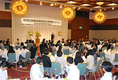

埼玉県生協連創立40周年記念レセプション 報告

7月12日、浦和ロイヤルパインズホテルにおいて、埼玉県生協連の｢創立40周年記念レセプション｣が開かれ、各界代表の皆様等170人が出席し懇親を深めました。
■概 要
1．パワーポイントによる埼玉県生協連のこの10年間の取り組みを紹介
2．主催者あいさつ
| 主催者あいさつする 伊藤会長理事 |
| 来賓あいさつされる 塩川県副知事 |
| あいさつと乾杯のご発声をされる柿沼県婦連会長 |
はじめに伊藤会長理事が出席の皆様へのお礼を述べました。40周年を迎え組合員数210万人・事業高1600億円に到達したことは、県をはじめ行政や県市町村議会・地域の諸団体の皆様のご支援のおかげです。今年は国際協同組合年であり、国連が協同組合に期待し求めていることにたいし、どう向き合いどう応えていくのか問われています。2012年埼玉の生協は、協同組合のあらたな発展のはじまりの年としてさらなる努力努力をしていきます。
3．ご来賓祝辞
塩川修埼玉県副知事様(上田清司埼玉県知事代理）、埼玉県議会議長小島信昭様、日本生活協同組合連合会会長浅田克己様、JA埼玉県中央会・連合会会長鯨井武明様、さいたま市長清水勇人様より祝辞をいただきました。
4．乾杯
埼玉県地域婦人会連合会会長柿沼トミ子様よりあいさつと乾杯のご発声があり、歓談に入りました。
5．埼玉県生協連元役員あいさつ
初代専務理事藤川一栄様、元会長理事谷川宏様、前会長理事石川祐司様からごあいさついただきました。
6．埼玉大学吹奏楽部フルート3重奏
｢G線上のアリア｣、四季の彩りを飾る童謡メドレーとして｢春が来た｣｢茶摘み｣｢紅葉｣｢雪｣｢ふるさと｣等の演奏いただきました。
7．閉会あいさつ
埼玉県生協岩岡副会長理事が出席の皆様へのお礼を述べた後､｢本日、ご参加くださった皆さまからの声を受け止めさせていただき、引き続き、消費者の立場に立って、力を尽くしていきます｡｣と閉会のあいさつをしました。
 |
|
| 閉会あいさつをする 岩岡副会長理事 |
埼玉大学吹奏学部によるフルート3重奏 |